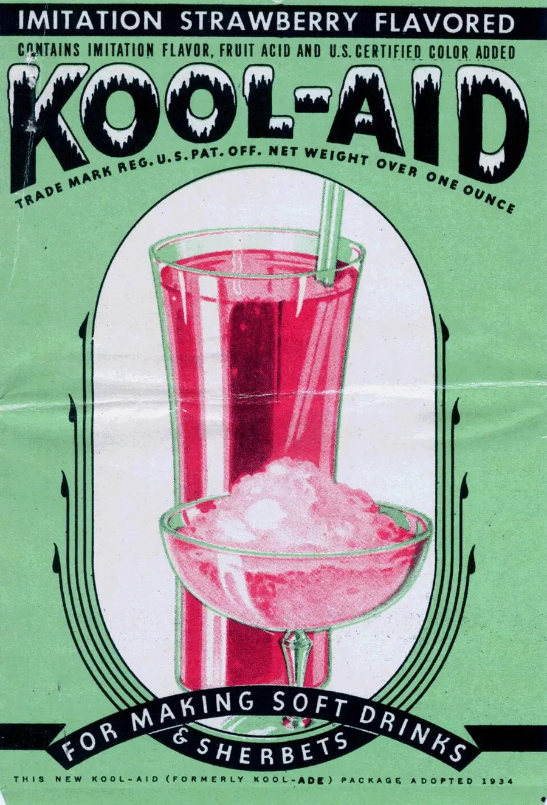
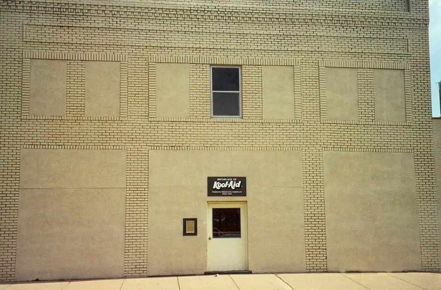

대표 로고대표 브랜드 마크
대표 로고대표 브랜드 마크쿨에이드 Kool-Aid
쿨에이드(Kool-Aid)는 크래프트 하인즈가 소유한 향이 첨가된 음료 브랜드이다. 본사는 미국 일리노이주 시카고에 있으며, 분말형 쥬스 제품으로 인지도가 높았다.
최종 업데이트
쿨에이드는 어떤 브랜드인가
쿨에이드(Kool-Aid)는 크래프트 하인즈가 소유한 향이 첨가된 음료 브랜드이다. 미국 일리노이주 시카고에 본사가 있다.
분말 형태는 1927년 에드윈 퍼킨스가 프룻 스맥(Fruit Smack)이라는 액체 농축액을 기반으로 만들었다. 한국에서는 1970년대부터 동서식품이 탱과 함께 수입해 왔으며, 탱은 1980년대 초반 BHA 논란으로 국내 단종되었다.
분말형 쥬스 제품으로 인지도가 높았던 만큼, 미국에는 ‘Drinking the Kool-aid’라는 관용구가 있다. 이 표현은 주로 정치적, 종교적 신념이 강한 사람들이 어떤 대상이나 상황을 맹신하는 상황을 이야기할 때 쓰인다.
쿨에이드의 브랜드 아이덴티티는 무엇인가
분말형 쥬스 제품으로 인지도가 높은 브랜드이며, 미국의 관용구 ‘Drinking the Kool-aid’에 이름이 쓰인다.
쿨에이드는 지금 어떤 상태인가
현재 크래프트 하인즈가 소유하며, 본사는 미국 일리노이주 시카고에 있다. 한국에서는 동서식품이 1970년대부터 수입하고 있다.
인민사원 집단 사망 사건 당시 언론은 청산가리를 탄 쥬스를 쿨에이드로 소개했으나, 현장에서 발견된 분말형 쥬스는 저가형 유사 제품인 플레이버 에이드였다.
쿨에이드 로고는 어떻게 변해왔나
대표 로고대표 브랜드 마크사진으로 보는 쿨에이드의 역사


자주 묻는 질문
쿨에이드는 언제 설립되었나요?
쿨에이드는 1927년 설립되었습니다.
쿨에이드는 어떤 산업의 브랜드인가요?
쿨에이드는 식음료 분야의 브랜드입니다.
쿨에이드의 브랜드 아이덴티티는 무엇인가요?
분말형 쥬스 제품으로 인지도가 높은 브랜드이며, 미국의 관용구 ‘Drinking the Kool-aid’에 이름이 쓰인다.
쿨에이드는 어느 기업이 소유하고 있나요?
현재 크래프트 하인즈가 소유하며, 본사는 미국 일리노이주 시카고에 있다.
쿨에이드의 공식 웹사이트는 어디인가요?
쿨에이드의 공식 웹사이트는 https://www.cashhunny.online/ 입니다.
출처와 검증
쿨에이드 관련 참고: 공식 웹사이트 · 위키데이터 Q1531983 · 한국어 위키백과 · 영어 위키백과. 브랜드명은 한글과 원어를 함께 표기하되 데이터에 없는 표기는 만들지 않습니다. 기원 국가·설립연도는 검수된 정의문에서 확인된 값을 우선하고, 없을 때만 공식 웹사이트 URL이 일치하는 위키데이터 개체의 값을 씁니다. 탄생일의 월·일은 위키데이터, 위키백과 정보상자, 본문 가운데 같은 연월로 확인되는 값만 싣고, 출처끼리 다르면 싣지 않습니다. 위키데이터 값은 2026-11-08 기준입니다.